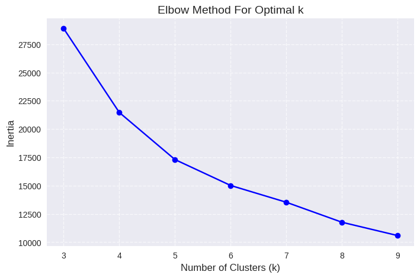
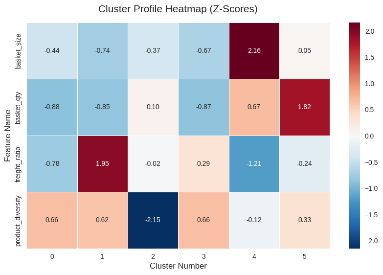
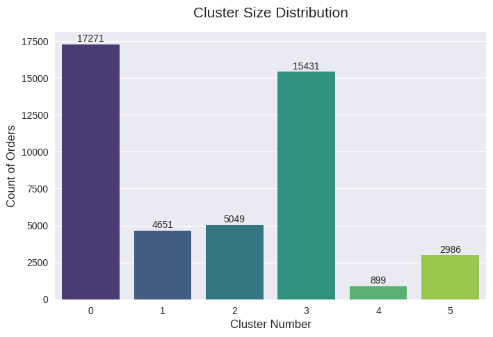

Chapter 3: Unsupervised Learning (E-Commerce Orders)#
We will:
Continue working with the expanded dataset from chapter 01
Perform clustering to identify similar order types
Apply market basket analysis (association rule mining)
Write up findings
Publish analysis as a github.io page
Work top-to-bottom. Complete each part in order before moving on.
Setup#
Run the cell below to import the required Python packages.
import pandas as pd
import numpy as np
import matplotlib.pyplot as plt
import seaborn as sns
from sklearn.model_selection import train_test_split
from sklearn.preprocessing import StandardScaler
from sklearn.cluster import KMeans
from mlxtend.preprocessing import TransactionEncoder
from mlxtend.frequent_patterns import apriori, association_rules
import warnings
warnings.filterwarnings('ignore')
plt.style.use('seaborn-v0_8')
Load Cleaned Dataset from Chapter 1#
Run the cell below to load the cleaned and expanded dataset created in chapter 1.
# Load cleaned dataset
df = pd.read_csv('data/ecommerce_orders_cleaned.csv')
print("========== First 5 Rows ==========")
df.head(5)
========== First 5 Rows ==========
| order_id | order_status | order_purchase_hour | order_purchase_dayofweek | order_purchase_month | order_total_value | num_items | num_unique_products | num_unique_sellers | total_item_price | avg_item_price | total_freight_value | top_product_category | customer_state | payment_type | order_value_per_item | order_size_category | |
|---|---|---|---|---|---|---|---|---|---|---|---|---|---|---|---|---|---|
| 0 | sdv-id-whzjUX | shipped | 10 | 4 | 4 | 744.312535 | 1 | 1 | 1 | 352.420029 | 369.966521 | 68.790159 | construction_tools_construction | Massachusetts | voucher | 352.420029 | Small |
| 1 | sdv-id-dbopoJ | delivered | 19 | 2 | 3 | 1556.667902 | 1 | 1 | 1 | 289.242639 | 1354.621410 | 15.394619 | health_beauty | Vermont | credit_card | 289.242639 | Small |
| 2 | sdv-id-FSEOvM | delivered | 15 | 4 | 8 | 62.060506 | 1 | 1 | 1 | 26.893468 | 48.485654 | 18.751282 | luggage_accessories | South Carolina | debit_card | 26.893468 | Small |
| 3 | sdv-id-bQcBUR | delivered | 21 | 0 | 8 | 73.873470 | 1 | 1 | 1 | 37.790896 | 75.704909 | 8.670875 | computers_accessories | Kentucky | credit_card | 37.790896 | Small |
| 4 | sdv-id-MPxIXB | delivered | 13 | 5 | 5 | 361.961537 | 3 | 3 | 3 | 169.528323 | 50.132979 | 34.731146 | pet_shop | Missouri | voucher | 56.509441 | Medium |
Unsupervised Learning#
Objective#
In this part, we will work on unsupervised learning and support analysis with visualization. Perform clustering to identify similar orders and generate order type recommendations based on their characteristics. An order type cluster represents a group of orders with similar purchasing patterns, value structures, and composition.
Task 1: Data Preprocessing for Unsupervised Learning#
Goal: Create DataFrames that contain one row per order with features suitable for both clustering and association mining.
1.1 Create all_orders_df (one row per order)#
Create a new DataFrame called all_orders_df with the following columns:
Identifier:
order_id— Unique identifier of the orderbasket_size— Monetary value of the order (fromorder_total_value)basket_qty— Number of items in the order (fromnum_items)freight_ratio— Proportion of the order value that is freight (computed astotal_freight_value / order_total_value)product_diversity— How varied the basket is in terms of product types (computed asnum_unique_products / num_items)top_product_category— The dominant product category in the orderpayment_type— The payment method usedorder_size_category— The order size category (Small/Medium/Large)
Notes:
all_orders_dfmust have exactly one row perorder_id.No missing values should remain in these columns after preprocessing.
Handle potential division issues appropriately (e.g., orders with zero values).
Display the first 10 rows of
all_orders_df, its shape, and data types.
# Create all_orders_df
# Initialize and extract the base column
all_orders_df = pd.DataFrame()
all_orders_df['order_id'] = df['order_id']
all_orders_df['basket_size'] = df['order_total_value']
all_orders_df['basket_qty'] = df['num_items']
# calculate proportional characteristics
all_orders_df['freight_ratio'] = np.where(
df['order_total_value'] == 0,
0,
df['total_freight_value'] / df['order_total_value']
)
all_orders_df['product_diversity'] = np.where(
df['num_items'] == 0,
0,
df['num_unique_products'] / df['num_items']
)
# Extract classification features
all_orders_df['top_product_category'] = df['top_product_category']
all_orders_df['payment_type'] = df['payment_type']
all_orders_df['order_size_category'] = df['order_size_category']
# Remove duplicates
all_orders_df = all_orders_df.drop_duplicates(subset=['order_id']).copy()
# No missing values should remain
fill_values = {
'basket_size': 0,
'basket_qty': 0,
'freight_ratio': 0,
'product_diversity': 0,
'top_product_category': 'Unknown',
'payment_type': 'Unknown',
'order_size_category': 'Unknown'
}
all_orders_df = all_orders_df.fillna(value=fill_values)
# Display first 10 rows
print("========== First 10 Rows ==========")
display(all_orders_df.head(10))
print("\n========== DataFrame Shape ==========")
print(all_orders_df.shape)
print("\n========== Data Types ==========")
print(all_orders_df.dtypes)
========== First 10 Rows ==========
| order_id | basket_size | basket_qty | freight_ratio | product_diversity | top_product_category | payment_type | order_size_category | |
|---|---|---|---|---|---|---|---|---|
| 0 | sdv-id-whzjUX | 744.312535 | 1 | 0.092421 | 1.000000 | construction_tools_construction | voucher | Small |
| 1 | sdv-id-dbopoJ | 1556.667902 | 1 | 0.009889 | 1.000000 | health_beauty | credit_card | Small |
| 2 | sdv-id-FSEOvM | 62.060506 | 1 | 0.302145 | 1.000000 | luggage_accessories | debit_card | Small |
| 3 | sdv-id-bQcBUR | 73.873470 | 1 | 0.117375 | 1.000000 | computers_accessories | credit_card | Small |
| 4 | sdv-id-MPxIXB | 361.961537 | 3 | 0.095953 | 1.000000 | pet_shop | voucher | Medium |
| 5 | sdv-id-ySodbB | 867.750230 | 7 | 0.204442 | 0.857143 | sports_leisure | voucher | Large |
| 6 | sdv-id-wdwBrk | 55.965822 | 2 | 0.285101 | 0.500000 | toys | points | Small |
| 7 | sdv-id-maBYtk | 170.295452 | 3 | 0.089290 | 1.000000 | computers_accessories | voucher | Medium |
| 8 | sdv-id-oodUXj | 83.065603 | 1 | 0.236471 | 1.000000 | furniture_decor | voucher | Small |
| 9 | sdv-id-zroJIL | 98.250248 | 1 | 0.369709 | 1.000000 | fashion_bags_accessories | points | Small |
========== DataFrame Shape ==========
(46287, 8)
========== Data Types ==========
order_id object
basket_size float64
basket_qty int64
freight_ratio float64
product_diversity float64
top_product_category object
payment_type object
order_size_category object
dtype: object
1.2 Create orders_analysis_df#
Notes:
Use
train_test_splitfrom sklearn to split the data inall_orders_df.Set
test_size=0.3(keep 30% of data for analysis) andrandom_state=37for reproducibility.Assign the test set to the variable
orders_analysis_df.Display the shape of
orders_analysis_dfand show its first 10 rows.
# Create orders_analysis_df using train_test_split
orders_train_df, orders_analysis_df = train_test_split(
all_orders_df,
test_size=0.3,
random_state=37
)
print("========== DataFrame Shape ==========")
print(orders_analysis_df.shape)
print("\n========== First 10 Rows ==========")
display(orders_analysis_df.head(10))
========== DataFrame Shape ==========
(13887, 8)
========== First 10 Rows ==========
| order_id | basket_size | basket_qty | freight_ratio | product_diversity | top_product_category | payment_type | order_size_category | |
|---|---|---|---|---|---|---|---|---|
| 1882 | sdv-id-ISddRn | 132.611695 | 1 | 0.126285 | 1.000000 | christmas_supplies | voucher | Small |
| 40995 | sdv-id-GmlErp | 730.510053 | 6 | 0.075288 | 0.666667 | furniture_decor | credit_card | Large |
| 40104 | sdv-id-BWpket | 632.486142 | 1 | 0.051262 | 1.000000 | bed_bath_table | credit_card | Small |
| 25808 | sdv-id-krmbPT | 47.102393 | 1 | 0.248932 | 1.000000 | telephony | credit_card | Small |
| 23294 | sdv-id-vhfMmG | 133.285008 | 1 | 0.135860 | 1.000000 | health_beauty | debit_card | Small |
| 7160 | sdv-id-kcTYfM | 403.696187 | 2 | 0.079065 | 0.500000 | auto | credit_card | Small |
| 7180 | sdv-id-tFFFCg | 211.465148 | 2 | 0.162263 | 1.000000 | furniture_decor | voucher | Small |
| 20801 | sdv-id-KgDKAA | 57.520738 | 1 | 0.228879 | 1.000000 | bed_bath_table | credit_card | Small |
| 19879 | sdv-id-cfCjEB | 576.212699 | 3 | 0.056350 | 0.666667 | bed_bath_table | credit_card | Medium |
| 39874 | sdv-id-uxRZME | 141.772602 | 2 | 0.200719 | 1.000000 | fashion_bags_accessories | credit_card | Small |
Task 2: Determine the Optimal Number of Clusters#
2.1 Run K-Means for Different Cluster Numbers#
Use only the four numerical features from
orders_analysis_df(basket_size,basket_qty,freight_ratio,product_diversity) for clustering.Run K-means clustering from k = 3 to 9 clusters.
Important: First scale the numerical features using
StandardScalerbefore fitting K-means.In each run, calculate the inertia of the cluster and store the values for each k (3 to 9) in a list or table.
Inertia is a measure of how tightly packed the clusters are. It is the sum of squared distances between each point and its assigned cluster center (centroid). Lower inertia indicates that the clusters are more compact, and the points are closer to their centroids, suggesting better clustering.
#Run K-means for k=3 to 9 and calculate inertia
# Extract four numerical features
num_features = ['basket_size', 'basket_qty', 'freight_ratio', 'product_diversity']
X = orders_analysis_df[num_features]
# Standardize
scaler = StandardScaler()
X_scaled = scaler.fit_transform(X)
# Run K-Means (from 3 to 9) and record the Inertia.
inertia_values = []
k_range = range(3, 10)
for k in k_range:
# Instantiate the K-Means model
kmeans = KMeans(n_clusters=k, random_state=37, n_init='auto')
# Fit the standardized data
kmeans.fit(X_scaled)
# Extract and save the inertia attribute
inertia_values.append(kmeans.inertia_)
inertia_table = pd.DataFrame({
'Number of Clusters (k)': k_range,
'Inertia': inertia_values
})
print("========== Inertia for Different k ==========")
display(inertia_table)
========== Inertia for Different k ==========
| Number of Clusters (k) | Inertia | |
|---|---|---|
| 0 | 3 | 28884.287460 |
| 1 | 4 | 21464.490872 |
| 2 | 5 | 17303.164622 |
| 3 | 6 | 15014.005307 |
| 4 | 7 | 13530.944387 |
| 5 | 8 | 11762.816173 |
| 6 | 9 | 10585.957147 |
2.2 Elbow Method for Optimal Clusters#
Plot the inertia (y-axis) against the number of clusters (x-axis) to identify the optimal number of clusters using the Elbow method.
Based on the Elbow plot, choose the optimal number of clusters and state your choice clearly.
The Elbow Method helps in selecting the number of clusters by identifying where the inertia starts to decrease more slowly.
# Create Elbow plot
plt.figure(figsize=(8, 5))
# Drawing a line chart
plt.plot(
inertia_table['Number of Clusters (k)'],
inertia_table['Inertia'],
marker='o',
linestyle='-',
color='b'
)
# Add chart title and axis labels
plt.title('Elbow Method For Optimal k', fontsize=14)
plt.xlabel('Number of Clusters (k)', fontsize=12)
plt.ylabel('Inertia', fontsize=12)
plt.xticks(k_range)
plt.grid(True, linestyle='--', alpha=0.7)
plt.show()

💡Optimal choice of k
Here, we choose 6 as the optimal number of clusters. From the elbow plot, inertia decreases sharply between k=3 and k=6. After k=6, the curve flattens, and inertia reduction becomes small and linear. This shows k=6 is the elbow point and adding more clusters beyond 6 does not significantly improve data partitioning.
Task 3: Cluster Analysis and Visualization#
3.1 Identify the Cluster Number for Each Order#
Create a K-means model using the four numerical features from
all_orders_dfand the optimal number of clusters identified in Task 2.Fit the model on the scaled numerical features.
Use the fitted model to assign a cluster number to each order and add a new column called
clustertoall_orders_df.Show the first 10 rows of
all_orders_dfto verify cluster assignment.
# Fit K-means with optimal k and assign clusters
optimal_k = 6
# Extract numerical features from the full dataset
num_features = ['basket_size', 'basket_qty', 'freight_ratio', 'product_diversity']
X_all = all_orders_df[num_features]
# Standardize the entire dataset
scaler_all = StandardScaler()
X_all_scaled = scaler_all.fit_transform(X_all)
# Initialize and train the final K-Means model
kmeans_final = KMeans(n_clusters=optimal_k, random_state=37, n_init='auto')
kmeans_final.fit(X_all_scaled)
# Add the cluster labels to the original dataframe as a new column
all_orders_df['cluster'] = kmeans_final.labels_
# Display first 10 rows
print(f"========== First 10 Rows with Cluster Assignment (k={optimal_k}) ==========")
display(all_orders_df.head(10))
========== First 10 Rows with Cluster Assignment (k=6) ==========
| order_id | basket_size | basket_qty | freight_ratio | product_diversity | top_product_category | payment_type | order_size_category | cluster | |
|---|---|---|---|---|---|---|---|---|---|
| 0 | sdv-id-whzjUX | 744.312535 | 1 | 0.092421 | 1.000000 | construction_tools_construction | voucher | Small | 0 |
| 1 | sdv-id-dbopoJ | 1556.667902 | 1 | 0.009889 | 1.000000 | health_beauty | credit_card | Small | 4 |
| 2 | sdv-id-FSEOvM | 62.060506 | 1 | 0.302145 | 1.000000 | luggage_accessories | debit_card | Small | 1 |
| 3 | sdv-id-bQcBUR | 73.873470 | 1 | 0.117375 | 1.000000 | computers_accessories | credit_card | Small | 0 |
| 4 | sdv-id-MPxIXB | 361.961537 | 3 | 0.095953 | 1.000000 | pet_shop | voucher | Medium | 0 |
| 5 | sdv-id-ySodbB | 867.750230 | 7 | 0.204442 | 0.857143 | sports_leisure | voucher | Large | 5 |
| 6 | sdv-id-wdwBrk | 55.965822 | 2 | 0.285101 | 0.500000 | toys | points | Small | 2 |
| 7 | sdv-id-maBYtk | 170.295452 | 3 | 0.089290 | 1.000000 | computers_accessories | voucher | Medium | 0 |
| 8 | sdv-id-oodUXj | 83.065603 | 1 | 0.236471 | 1.000000 | furniture_decor | voucher | Small | 3 |
| 9 | sdv-id-zroJIL | 98.250248 | 1 | 0.369709 | 1.000000 | fashion_bags_accessories | points | Small | 1 |
3.2 Visualize the Clusters#
Visualization 1: Cluster Profile Heatmap
Visualize the cluster profiles using a heatmap to understand the average characteristics of each segment.
Step 1: Compute the mean of the four numerical features (
basket_size,basket_qty,freight_ratio,product_diversity) for each cluster.Step 2: Scale these means (e.g., using
StandardScalerto calculate Z-scores) so that different units (price vs. count) can be compared directly.Step 3: Plot the scaled means as a heatmap:
X-axis: Cluster number
Y-axis: Feature name
Color: Use a diverging colormap (e.g.,
RdBu_r) to distinguish features that are above average (positive Z-score) from those that are below average (negative Z-score)Annotation: Display the Z-score values in each cell
Step 4：Add a clear title.
Visualization 2: Cluster Size Distribution
Step 1: Create a bar chart showing the number of orders in each cluster.
X-axis: Cluster number (0, 1, 2, …)
Y-axis: Count of orders
This helps you understand if clusters are balanced or if some clusters dominate.
Step 2: Add a title and axis labels.
# Visualization 1 - Cluster profile heatmap
# Compute the mean of the four numerical features for each cluster
num_features = ['basket_size', 'basket_qty', 'freight_ratio', 'product_diversity']
cluster_means = all_orders_df.groupby('cluster')[num_features].mean()
# Scale these means using StandardScaler to calculate Z-scores
scaler_heatmap = StandardScaler()
scaled_means_array = scaler_heatmap.fit_transform(cluster_means)
scaled_means_df = pd.DataFrame(
scaled_means_array,
columns=cluster_means.columns,
index=cluster_means.index
).T
# Plot the heatmap
plt.figure(figsize=(10, 6))
sns.heatmap(
scaled_means_df,
annot=True,
fmt=".2f",
cmap="RdBu_r",
center=0,
linewidths=.5
)
plt.title('Cluster Profile Heatmap (Z-Scores)', fontsize=15, pad=15)
plt.xlabel('Cluster Number', fontsize=12)
plt.ylabel('Feature Name', fontsize=12)
plt.show()

# Visualization 2 - Cluster size distribution
# Calculate the number of orders for each cluster
cluster_counts = all_orders_df['cluster'].value_counts().sort_index()
# Draw a bar chart
plt.figure(figsize=(8, 5))
sns.barplot(
x=cluster_counts.index,
y=cluster_counts.values,
palette="viridis"
)
plt.title('Cluster Size Distribution', fontsize=15, pad=15)
plt.xlabel('Cluster Number', fontsize=12)
plt.ylabel('Count of Orders', fontsize=12)
for i, count in enumerate(cluster_counts.values):
plt.text(i, count + (max(cluster_counts.values)*0.01), str(count), ha='center', fontsize=10)
plt.show()

Briefly comment (2-3 sentences) on:
How well separated do the clusters appear based on the heatmap?
Which features seem to have the most significant impact on defining the clusters? Why might this be the case?
Based on the visualizations that you have generated, comment on the nature of the clusters and what it implies for an e-commerce business
💡Insights
1. The separation degree of clustering
From the heat map, it can be seen that there is a certain degree of distinction between the clusters, but the boundaries of some clusters (such as 0 and 3) are not clear. While other clusters (such as 1, 2, 4 and 5)are distinctly defined by extreme positive or negative Z-scores in at least one key feature.
2. Most significant impact features
Features like
basket_size,freight_ratio, andproduct_diversityhave significant impact on defining clusters, as they strongly capture contrasting purchasing behaviors such as premium spending (such as 4), bulk buying (such as 5).
3. Cluster implications for e-commerce business
Cluster 0：Budget-Friendly Shoppers. The small order volume and low shipping fees indicate that they are good at aggregating orders for discounts. These are active users but they are price-sensitive.
Cluster 1：Convenience Seekers. The order size is small, but the freight cost accounts for a high proportion. Might be users in remote areas or with urgent needs, who place more emphasis on timeliness rather than cost.
Cluster 2：Loyalty Buyers. The extremely low variety of products indicates that they repeatedly purchase a few fixed categories. This suggests that they are loyal users of the brand or the specific product category.
Cluster 3：Impulse Buyers. The order is small, the shipping cost is a bit high, but there are various product options. This might be a spur-of-the-moment scattered purchase, rather than waiting to complete a larger order.
Cluster 4: Premium Spenders. The basket amounts are significantly higher than the average, and the proportion of shipping fees is extremely low. They are the core source of revenue and profit for the platform.
Cluster 5: Bulk Quantity Buyers. Medium-sized basket amounts, but extremely large quantity of goods. This might indicate that they are purchasing multiple items of the same product or purchasing combination packages.
Task 4: Market Basket Analysis (Association Rule Mining)#
4.1 Context: What is Market Basket Analysis?#
Market Basket Analysis is an unsupervised learning technique that identifies which products, categories, or attributes are frequently observed together. In e-commerce, this helps answer questions such as:
“Which payment methods are preferred for which product categories?”
“Do certain order sizes correlate with specific product types?”
“What are the multi-dimensional patterns across category, payment, and order size?”
Association rules are commonly described using three key metrics:
Support: How frequently a pattern occurs (0-1 scale)
Confidence: Likelihood of the consequent given the antecedent (0-1 scale)
Lift: How much more likely the rule is compared to random chance (> 1 indicates a positive association)
The Apriori algorithm discovers frequent itemsets and then generates association rules from them.
In this task, we will perform Market Basket Analysis using the categorical features from all_orders_df to discover multi-dimensional associations between product category, payment type, and order size category.
4.2 Prepare Transaction Data#
Convert each order in all_orders_df into a simple “basket” representation.
Create a Python list called transactions, where each element represents one order and contains exactly three string items constructed from that order:
cat_{top_product_category}(e.g.,cat_electronics,cat_furniture_decor)pay_{payment_type}(e.g.,pay_credit_card,pay_boleto)size_{order_size_category}(e.g.,size_Small,size_Large)
After constructing transactions, display the first 5 transactions to verify the format.
# Create transaction list
# Pack three columns of data and generate a list of strings with a specific prefix
transactions = [
[f"cat_{cat}", f"pay_{pay}", f"size_{size}"]
for cat, pay, size in zip(
all_orders_df['top_product_category'],
all_orders_df['payment_type'],
all_orders_df['order_size_category']
)
]
# Display the first 5 transactions to verify the format
print("========== First 5 Transactions ==========")
for i in range(5):
print(transactions[i])
========== First 5 Transactions ==========
['cat_construction_tools_construction', 'pay_voucher', 'size_Small']
['cat_health_beauty', 'pay_credit_card', 'size_Small']
['cat_luggage_accessories', 'pay_debit_card', 'size_Small']
['cat_computers_accessories', 'pay_credit_card', 'size_Small']
['cat_pet_shop', 'pay_voucher', 'size_Medium']
4.3 Encode Transactions and Apply Apriori Algorithm#
Use the mlxtend library to discover frequent itemsets and generate association rules.
Step 1: Encode transactions using
TransactionEncoderand display the shape of the encoded DataFrame.Step 2: Apply
apriori()withmin_support = 0.01anduse_colnames = True, then display the number of frequent itemsets found.Step 3: Generate association rules using
association_rules()withmetric = 'lift'andmin_threshold = 1.0, then display the number of rules generated.
# Step 1 - Encode transactions
# Instantiate encoder
encoder = TransactionEncoder()
# Fit and transform the transactions list
encoded_array = encoder.fit(transactions).transform(transactions)
# Convert the transformed boolean array back into DataFrame
encoded_df = pd.DataFrame(encoded_array, columns=encoder.columns_)
# Print shape
print("========== Encoded DataFrame Shape ==========")
print(encoded_df.shape)
========== Encoded DataFrame Shape ==========
(46287, 79)
# Step 2 - Apply Apriori
frequent_itemsets = apriori(encoded_df, min_support=0.01, use_colnames=True)
print("========== Number of Frequent Itemsets Found ==========")
print(len(frequent_itemsets))
========== Number of Frequent Itemsets Found ==========
102
# Step 3 - Generate association rules
rules = association_rules(frequent_itemsets, metric='lift', min_threshold=1.0)
print("========== Number of Association Rules Generated ==========")
print(len(rules))
========== Number of Association Rules Generated ==========
138
4.4 Extract and Display Top 10 Rules#
Sort the association rules by lift in descending order and display the top 10 rules in a table showing:
Antecedents (left-hand side of rule)
Consequents (right-hand side of rule)
Support
Confidence
Lift
Example rule output and interpretation:
antecedents |
consequents |
support |
confidence |
lift |
|---|---|---|---|---|
(cat_furniture_decor, size_Large) |
(pay_credit_card) |
0.042 |
0.756 |
1.84 |
“Customers who purchase furniture in large orders have a 75.6% probability (confidence) of paying with a credit card. This behavior is 1.84 times more likely (lift) than the general probability of using a credit card.
# Display top 10 rules by lift
# Sort by lift in descending order and take the top 10 rows
top_10_rules = rules.sort_values(by='lift', ascending=False).head(10)
# Only extract the 5 columns required by the question
columns_to_display = ['antecedents', 'consequents', 'support', 'confidence', 'lift']
top_10_rules_display = top_10_rules[columns_to_display]
# Print Display
print("========== Top 10 Association Rules by Lift ==========")
display(top_10_rules_display)
========== Top 10 Association Rules by Lift ==========
| antecedents | consequents | support | confidence | lift | |
|---|---|---|---|---|---|
| 24 | (size_Large) | (cat_furniture_decor) | 0.014583 | 0.392899 | 5.328480 |
| 25 | (cat_furniture_decor) | (size_Large) | 0.014583 | 0.197773 | 5.328480 |
| 76 | (cat_bed_bath_table) | (size_Medium, pay_credit_card) | 0.016851 | 0.121514 | 2.023212 |
| 73 | (size_Medium, pay_credit_card) | (cat_bed_bath_table) | 0.016851 | 0.280576 | 2.023212 |
| 75 | (size_Medium) | (pay_credit_card, cat_bed_bath_table) | 0.016851 | 0.171693 | 1.757439 |
| 74 | (pay_credit_card, cat_bed_bath_table) | (size_Medium) | 0.016851 | 0.172490 | 1.757439 |
| 27 | (cat_furniture_decor) | (size_Medium) | 0.012660 | 0.171696 | 1.749354 |
| 26 | (size_Medium) | (cat_furniture_decor) | 0.012660 | 0.128990 | 1.749354 |
| 9 | (cat_bed_bath_table) | (size_Medium) | 0.022749 | 0.164044 | 1.671388 |
| 8 | (size_Medium) | (cat_bed_bath_table) | 0.022749 | 0.231785 | 1.671388 |
💡Interpretations:
The top rules show that furniture_decor is most strongly associated with size_Large orders (highest lift of 5.3), which makes sense because furniture items are naturally bulky and expensive. Another key behavior is that customers buying bed_bath_table items usually place size_Medium orders and prefer paying with a credit_card (lift > 2.0). If we decrease min_support to 0.005, we will get many more rules by including rarer purchases, but if we increase it to 0.3, we will likely find zero rules because it is too strict for any combination to appear in 30% of all orders.
💡Business Recommendations:
Optimize Shipping for Furniture: Since furniture purchases are very strongly associated with large orders (lift > 5.0), the company should negotiate better rates with heavy-freight shipping partners to reduce costs and improve profit margins.
Credit Card Promotions for Home Goods: There is a strong link (lift > 2.0) between bed_bath_table items and credit card payments. The business can partner with credit card companies to offer discounts or cashback for the home goods category to encourage more sales.
Bundle Recommendations: Knowing that large orders are often furniture, the platform can automatically recommend complementary small items (like pillows or lamps) during checkout to increase the overall basket size.
Tips#
Rules with lift > 1.5 are considered strong associations; rules with lift > 2.0 are very strong.
When writing interpretations, explain not just the statistical strength but also the business logic behind the patterns.